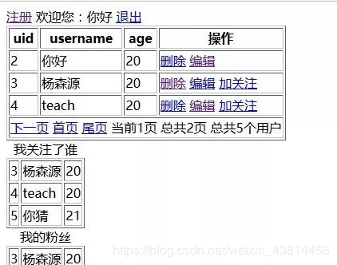

原文出处:本文由博客园博主程序媛的明天提供。
原文连接:https://www.cnblogs.com/a609251438/p/11908261.html
原文连接:https://www.cnblogs.com/a609251438/p/11908261.html
本文实例讲述了php+redis实现注册、删除、编辑、分页、登录、关注等功能。分享给大家供大家参考，具体如下：
主要界面

连接redis
redis.php
1 <?php
2 //实例化
3 $redis = new Redis();
4 //连接服务器
5 $a=$redis->connect("localhost",6379);
6 //var_dump($a);
7 //授权
8 $redis->auth("107lab");
注册界面
add.php
1 <form action="reg.php" method="post">
2 用户名:<input type="text" name="username"><br>
3 密码:<input type="password" name="password"><br>
4 年龄:<input type="text" name="age"><br>
5 <input type="submit" value="注册">
6 <input type="reset" value="重填">
7 </form>
注册实现
reg.php
1 <?php
2 require("redis.php");
3 $username = $_POST['username'];
4 $password = md5($_POST['password']);
5 $age = $_POST['age'];
6 //echo $username.$password.$age;
7 $uid = $redis->incr("userid");//设置自增id，相当于主键
8 $redis->hMset("user:".$uid,array("uid"=>$uid,"username"=>$username,"password"=>$password,"age"=>$age));//用hash类型存储用户比较方便
9 //将用户id存入一个链表中，便于统计数据
10 $redis->rpush("uid",$uid);
11 //将用id存入以用户名为键的字符类型中，便于查看用户是否存在。
12 $redis->set("username:".$username,$uid);
13 header('location:list.php');
14
15
列表页面
list.php
1 <a href="add.php" rel="external nofollow" >注册</a>
2 <?php
3 require("redis.php");
4 if(!empty($_COOKIE['auth'])){
5 $id = $redis->get("auth:".$_COOKIE['auth']);
6 $name = $redis->hget("user:".$id,"username");
7 ?>
8 欢迎您：<?php echo $name;?> <a href="logout.php" rel="external nofollow" >退出</a>
9 <?php } else { ?>
10 <a href="login.php" rel="external nofollow" >登录</a>
11 <?php } ?>
12 <?php
13 require("redis.php");
14 //用户总数
15 $count = $redis->lsize("uid");//获取链表的长度
16 //echo $count;
17 //页大小
18 $page_size = 3;
19 //当前页码
20 $page_num=(!empty($_GET['page']))?$_GET['page']:1;
21 //页总数
22 $page_count = ceil($count/$page_size);
23 $ids = $redis->lrange("uid",($page_num-1)*$page_size,(($page_num-1)*$page_size+$page_size-1));
24 //var_dump($ids);
25 foreach($ids as $v){
26 $data[]=$redis->hgetall("user:".$v);
27 }
28 /*
29 //以下为最初想到的分页处理，放入一个数组中，根据uid的最大值来当总个数，但是删除个别用户以后，uid不会变小，所以建议用链表，因为他有个lsize函数可以求出链表长度
30 //根据userid获取所有用户
31 for($i=1;$i<=($redis->get("userid"));$i++){
32 $data[]=$redis->hgetall("user:".$i);
33 }
34 //过滤空值
35 $data = array_filter($data);
36 //var_dump($data);
37 */
38 ?>
39 <table border=1>
40 <tr>
41 <th>uid</th>
42 <th>username</th>
43 <th>age</th>
44 <th>操作</th>
45 </tr>
46 <?php foreach($data as $v){ ?>
47 <tr>
48 <td><?php echo $v['uid']?></td>
49 <td><?php echo $v['username']?></td>
50 <td><?php echo $v['age']?></td>
51 <td>
52 <a href="del.php?id=<?php echo $v['uid'];?>" rel="external nofollow" >删除</a>
53 <a href="mod.php?id=<?php echo $v['uid'];?>" rel="external nofollow" >编辑</a>
54 <?php if(!empty($_COOKIE['auth']) && $id != $v['uid']){ ?>
55 <a href="addfans.php?id=<?php echo $v['uid'];?>&uid=<?php echo $id;?>" rel="external nofollow" >加关注</a>
56 <?php } ?>
57 </td>
58 </tr>
59 <?php } ?>
60 <tr>
61 <td colspan="4">
62 <?php if(($page_num-1)>=1){ ?>
63 <a href="?page=<?php echo ($page_num-1);?>" rel="external nofollow" >上一页</a>
64 <?php } ?>
65 <?php if(($page_num+1)<=$page_count){ ?>
66 <a href="?page=<?php echo ($page_num+1);?>" rel="external nofollow" >下一页</a>
67 <?php } ?>
68 <a href="?page=1" rel="external nofollow" >首页</a>
69 <a href="?page=<?php echo ($page_count);?>" rel="external nofollow" >尾页</a>
70 当前<?php echo $page_num;?>页
71 总共<?php echo $page_count;?>页
72 总共<?php echo $count;?>个用户
73 </td>
74 </tr>
75 </table>
76 <!--关注功能，建议用集合实现，因为集合元素唯一，并且可以容易求出两个用户粉丝之间交集与差集，进而进行好友推荐功能-->
77 <table border=1>
78 <caption>我关注了谁</caption>
79 <?php
80 $data = $redis->smembers("user:".$id.":following");
81 foreach($data as $v){
82 $row = $redis->hgetall("user:".$v);
83 ?>
84 <tr>
85 <td><?php echo $row['uid'];?></td>
86 <td><?php echo $row['username'];?></td>
87 <td><?php echo $row['age'];?></td>
88 </tr>
89 <?php } ?>
90 <table>
91 <table border=1>
92 <caption>我的粉丝</caption>
93 <?php
94 $data = $redis->smembers("user:".$id.":followers");
95 foreach($data as $v){
96 $row = $redis->hgetall("user:".$v);
97 ?>
98 <tr>
99 <td><?php echo $row['uid'];?></td>
100 <td><?php echo $row['username'];?></td>
101 <td><?php echo $row['age'];?></td>
102 </tr>
103 <?php } ?>
104 <table>
退出
logout.php
<?php
setcookie("auth","",time()-1);
header("location:list.php");
登录
login.php
1 <?php
2 require("redis.php");
3 $username = $_POST['username'];
4 $pass = $_POST['password'];
5 //根据注册时存储的以用户名为键的字符类型中查找用户id
6 $id = $redis->get("username:".$username);
7 if(!empty($id)){
8 $password = $redis->hget("user:".$id,"password");
9 if(md5($pass) == $password){
10 $auth = md5(time().$username.rand());
11 $redis->set("auth:".$auth,$id);
12 setcookie("auth",$auth,time()+86400);
13 header("location:list.php");
14 }
15 }
16 ?>
17 <form action="" method="post">
18 用户名:<input type="text" name="username"/><br>
19 密码:<input type="password" name="password"><br>
20 <input type="submit" value="登录"/>
21 </form>
删除
del.php
<?php
require("redis.php");
$uid = $_GET['id'];
//echo $uid;
$username = $redis->hget("user:".$id,"username");
$a=$redis->del("user:".$uid);
$redis->del("username:".$username);
$redis->lrem("uid",$uid);
//var_dump($a);
header("location:list.php");
编辑界面
mod.php
1 <?php
2 require("redis.php");
3 $uid = $_GET['id'];
4 $data=$redis->hgetall("user:".$uid);
5 ?>
6 <form action="doedit.php" method="post">
7 <input type="hidden" value="<?php echo $data['uid'];?>" name="uid">
8 用户名:<input type="text" name="username" value="<?php echo $data['username'];?>"><br>
9 年龄:<input type="text" name="age" value="<?php echo $data['age'];?>"><br>
10 <input type="submit" value="提交">
11 <input type="reset" value="重填">
12 </form>
编辑功能
doedit.php
1 <?php
2 require('redis.php');
3 $uid = $_POST['uid'];
4 $username = $_POST['username'];
5 $age = $_POST['age'];
6 $a=$redis->hmset("user:".$uid,array("username"=>$username,"age"=>$age));
7 if($a){
8 header("location:list.php");
9 }else{
10 header("location:mod.php?id=".$uid);
11 }
加关注
addfans.php
1 <?php
2 //关注功能，建议用集合实现，因为集合元素唯一，并且可以容易求出两个用户粉丝之间交集与差集，进而进行好友推荐功能
3 $id = $_GET['id'];
4 $uid = $_GET['uid'];
5 require("redis.php");
6 $redis->sadd("user:".$uid.":following",$id);
7 $redis->sadd("user:".$id.":followers",$uid);
8 header("location:list.php");很多PHPer在进阶的时候总会遇到一些问题和瓶颈，业务代码写多了没有方向感，不知道该从那里入手去提升，对此我整理了一些资料，包括但不限于：分布式架构、高可扩展、高性能、高并发、服务器性能调优、TP6，laravel，YII2，Redis，Swoole、Swoft、Kafka、Mysql优化、shell脚本、Docker、微服务、Nginx等多个知识点高级进阶干货需要的可以免费分享给大家，需要的加群（点击→）677079770